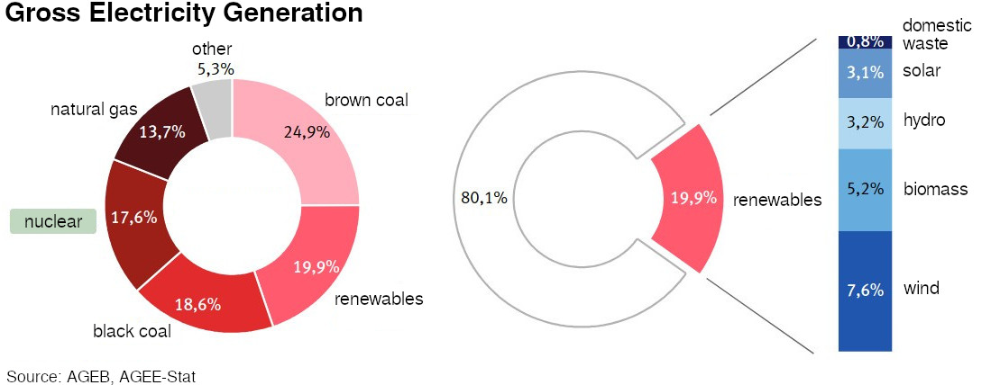
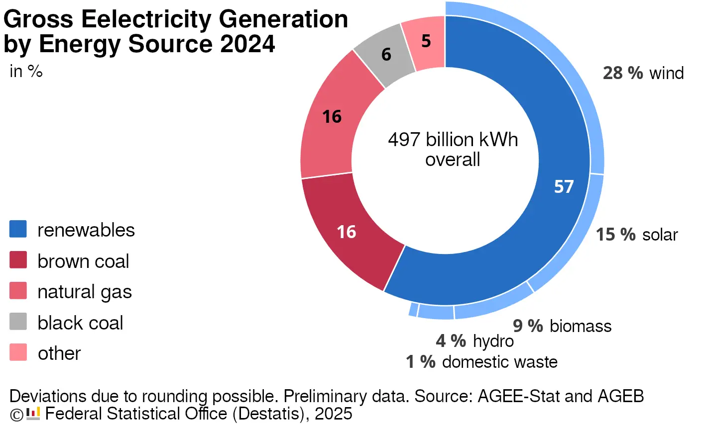

1. Negative Future Outlook
1.3 Solutions to Problems
Let’s take a look at the general problem-solving process.
It consists of 4 steps:
1. Recognizing the problem
2. Developing an idea for a solution
3. Implementing the solution
4. Verifying the solution
A simple example:
I notice that it costs way too much electricity to boil a pot of water on the stove every time I want to make tea. I therefore think it would be a good idea to get myself an electric kettle. It should be faster, cheaper, and more convenient. I even have the perfect spot for it in the kitchen! So, I go to a store, see that they’re not that expensive, and buy one right away. I go home and plug it in. And of course, I immediately make myself a cup of tea. Much easier and much more convenient! And to test the energy consumption, I also plugged in my electricity meter. I’m pleased to find that the electric kettle uses much less electricity than the stove did.
Translated into the general process, the steps were:
1. Problem: realizing that the electricity bill for boiling water for tea is too high
2. Idea: coming up with the idea of getting an electric kettle
3. Implementation: buying the kettle and making it operational
4. Check: making tea while measuring the electricity consumption
This general process can, of course, also be applied at the political level, not just in personal matters.
For this, I’ll take the example of nuclear power. Because, after decades of controversial discussions, there has been a broad political consensus on this topic in Germany.[3]
At the same time, it shows well where problem-solving in politics tends to get stuck.
Nuclear power was perceived as a problem since the Chernobyl reactor accident in 1986. Mainly due to the fact that radioactive dust blew over Germany. To this day, collecting mushrooms and berries in parts of Germany is problematic because they can be contaminated. And here contaminated means very concretely: it can cause thyroid cancer.
So that was step 1, Problem: nuclear power is extremely dangerous.
It should be noted here that the pressure to act, i.e., to actually change something, did not come from politics but from young people who subsequently used every transport of nuclear materials within Germany for protests.
Young people are idealistic. They have time to debate the state of the world, organize themselves, go out, and actually do something. In this case, blocking the Castor transports, so that thousands of police officers had to be deployed to bring the transports to their destination.
And even though these protests initially did nothing more than increase the costs of nuclear power (due to how much personnel was needed to protect the transports), they actually achieved a lot in Germany in the long term: The party “The Greens” (founded in 1980) emerged from the anti-nuclear movement, and it gradually brought ecological ideas into the political process. And without this movement, the Fukushima reactor disaster in 2011 could not have triggered a turnaround in German politics. But as it was, this new disaster was the impetus for Germany to decide to phase out nuclear power and gradually shut down its reactors.
So, all’s well that ends well for this story? If the reactors are shut down, we’ve checked our solution, right?
Let’s go through the steps one more time again and assign them.
1. Problem: nuclear power is extremely dangerous
2. Idea: abolish nuclear power
3. Implementation: pass a law to shut down the nuclear power plants
4. Check: the nuclear power plants are shut down
... What I find missing in this process is how the function previously fulfilled by nuclear power (energy generation) will be provided in the future.
If I had handled my example above like the nuclear power issue here, the process would have looked like this:
1. Problem: realizing that the electricity bill for boiling water for tea is too high.
2. Idea: stop using the stove to boil water for tea.
3. Implementation: post a note on the pinboard with the resolution not to use the stove for this purpose anymore.
4. Check: note that you’ve stuck to it and consequently drank tap water instead of tea (due to the lack of boiling water for tea preparation).
Honestly, I liked my first version of the tea example much better...
Because actually, the 4th step has be written like this:
Check: the nuclear power plants have been shut down, the electricity is supplied by coal and gas power plants instead.
Because just as I can’t give up drinking, Germany can’t do without electricity.
But couldn’t the electricity to replace the nuclear power plants also come from renewable sources? Might now get asked as a counter-question. Answer: no.
Renewable energy production like wind power, solar energy, tidal power plants, and geothermal energy don’t consume fuel. Instead they tap into naturally available energy sources. This means they require an initial investment and afterwards only incur maintenance costs.
This means that the variable costs of renewable energy sources (possibly higher maintenance) will always be much lower than the variable costs of coal and gas power plants (fuel). This is precisely what makes renewable energy production so economically attractive: you don’t have to keep spending money on new fuel.
Once one has paid the fixed costs of renewable energy production and it’s up and running, its full electricity generation will always get utilized. The energy will be pushed into the market, no matter how little one gets for it, because the additional income comes with almost no additional costs.
In contrast, a coal or gas power plant will be shut down at the very latest once the electricity price is lower than the cost of purchasing coal or gas.
In summary: If there’s more renewable energy production available, that’s great! It’s cheaper and cleaner. But in the electricity market, its full production will always be used, whether nuclear power plants are running or not. The electricity production is then supplemented by as much energy from coal and gas power plants as needed to meet demand. Fossil fuels are thus the variable part of the electricity market. And it’s this variable part, the fossil fuels, that increases when nuclear power plants are shut down.
This will only change once we produce so much renewable energy that it can no longer run at 100%, meaning the supply from it alone exceeds the total demand. It will still take some years until reach that point, though.
The shutdown of nuclear power plants didn’t change the incentives for expanding renewable energy (electricity prices for producers, subsidies, and purchase guarantees). There’s no reason to assume that more wind turbines and solar panels were built as a result.


This is the energy mix from 2011, when the nuclear phase-out was decided, and the current state in 2024. The shutdown of nuclear power, and thus the loss of 17% of electricity generation, does not change the 57% of renewable energy we see in 2024. By shutting down the nuclear power plants, not a single wind turbine or solar panel produces more energy. But if nuclear power were still contributing, electricity generation from brown coal + natural gas + black coal would be 17% lower. (This is, of course, simplified, as Europe has a shared energy market, but the principle remains the same.)
Okay, this discourse wasn’t exactly rocket science. This consequence should have been clear to the opponents of nuclear power. And if you’re young, idealistic, committed, and against nuclear power, shouldn’t you advocate for more solar and wind energy instead of simply letting coal and gas power plants take over?
The anti-nuclear movement was a movement, not a party program—that came much later. And a movement needs a shared narrative that unites it, something everyone believes in. And this unifying narrative was the terrible future that awaits us all with nuclear power. It is from this narrative the movement drew its strength and its supporters, and spurred them into action. Because such dystopias and such a negative outlook are precisely what we know from science fiction and the media, and therefore assume to be realistic for the future. This existing narrative power is a prerequisite for the success of a new movement, in this case the anti-nuclear movement.
And one day, if such a movement is successful, it becomes official policy. Here, Germany’s nuclear phase-out. But the birth defect of the gloomy outlook, of merely being against something, that it cannot shake off. Of course, today, The Greens (Bündnis 90/Die Grünen4) stand for many things. Good and right things. They are for more wind power, for solar panels on all roofs, for electric mobility, and for well-developed public transport.
Yet these things are not the ideological, emotional core of the party. The core is: we are against nuclear power, we are against climate change, we are against environmental destruction.
The positive things, on the other hand, that The Greens stand for, are younger, born out of the task of turning these ideals into actual policy. Then one works up a program of how to actually achieve these goals, and starts looking for the means to do so. But consensus takes a lot of time, and once a movement exists, it often becomes unattainable in many areas, no matter how much you debate. And so there exist countless citizens' associations today which are close to The Greens at least ideologically, but are simultaneously against wind turbines in their vicinity because they make noise and can kill migratory birds. Against solar panels because they come from China, require rare earths, and cover open spaces that can no longer be used by plants. And against power lines that need to be built to bring energy generated from sea tides and wind into the interior of the country.
All these positive concepts are not part of their ideal, not part of the vision of the future that the anti-nuclear movement initially created together. And so there is fierce debate, delays, and much less done for a good future than against a bad one.
Which then leads to an incredible number of bureaucratic regulations for everything, and everything taking much longer than if the entire movement were enthusiastically advocating for it.
At the same time, these two graphs are also a beautiful example of how we tend to view the world as worse than it actually is: despite all the problems I just listed, the share of renewable energy in the electricity mix has massively increased between 2011 and 2024: from 20% to 57%!
Now, let’s imagine for a moment that the core of the movement had been a positive attitude towards the future. That a positive narrative with the vision of a constructive solution would have been better suited to serve as the foundation for a new movement.
Then, instead of the “Anti-Nuclear Power Movement,” perhaps the “Renewable Energy Sources Movement” would have emerged. Still driven by the fact that nuclear power is extremely dangerous and that we want to get rid of it. But not by just being against nuclear power—rather, by replacing it with something better. This could happen through laws or through market forces. Or a combination of both, such as through taxes* or subsidies.
Wait, hold on! We’re talking about a movement here, not established policy. So let’s go again, with the means of young revolutionaries!
1. Erecting wild wind turbines and solar panels. Who needs permits anyway! We’ll just share the generated electricity communistically among ourselves—the fat energy corporations won’t get a cent!
2. Protest and obstruction of nuclear power, for sure and certain. With the goal of making renewable energy look even better in comparison. As soon as it makes sense, do the same for coal and gas power plants. Make everything that’s not renewable more expensive through protests!
3. Public relations: in the media, in writings, in discussions with friends—praise renewable energy, badmouth all other energy sources.
4. Financial pressure on grid operators: Find out which grid operators get how much energy from which sources and how much they pay for it. Use the most eco-friendly grid operator possible. Try to generate correspondingly good and bad press for the grid operators.
5. Do everything to promote the technical development of renewables to make them more competitive. Anyone studying in a relevant field should aim to work in this direction. Advocate for the state to fund this research and favor such companies (subsidies, lower taxes). Buy stocks accordingly—we believe in it after all!
6. Label anyone who raises objections to the construction of renewable energy production as enemies of progress. Silence them with shit storms if possible.
All in all: Still radical, as young movements often are, and certainly often overshooting the mark. But the goal would be something positive. Something to achieve by all means, instead of something to prevent no matter what. And that makes a world of difference.
If we lived in such a world, I would complain about too much zeal. I would point out the dangers of treating everyone else as opponents—us versus them—instead of engaging in open discussions. A calm search for the best solution for all parties involved would yield much better results than such dogma!
Were this movement successful, these discussions and compromises would eventually come. Suddenly, you’re a political party, need a serious program, and have to negotiate with coalition partners. And in that program, it would say that wind turbines must maintain a minimum distance from buildings so that residents aren’t too disturbed. And the more fanatical supporters would get upset about this dilution of ideals, because it means that fewer wind turbines are getting built, and that it takes longer until only renewable energy is in use!
So the party might have exactly the same things in its program as it does in our world. But the emotional connection, what the supporters demand how stubbornly, would be completely different. And as a result, we might already have so many wind turbines in Germany that the country not only no longer needs nuclear power but also doesn’t rely on any energy from natural gas or coal. And those wind turbines and solar panels would be produced on a large scale in Germany itself instead of being imported from China.5
Either way, the anti-nuclear power movement, both the real one and the one I invented, are just an example. Simply because it is well-known in Germany, and because it is successful. And the goals of a successful movement have a much greater impact on our reality than those of a failed one.
At their core, most movements in the world are similar to the anti-nuclear power movement. People are against war, against children going hungry, against vaccination, against speed limits on highways, against the "lying press," against high taxes, and against global warming.
On a small scale, there are are countless initiatives for something: for a new bypass road, for a new kindergarten, or for better school meals.
But where are the comprehensive, grand positive visions of the future that people can get excited about? I don’t see any.6
The consequences of the absence of great utopias that a society collectively strives to achieve go far beyond the fact that the transition to better energy production takes a few years longer than necessary and that we cede key technologies to China.
In many other cases, it is even harder to notice what is missing. What one could have if one pursued new goals with courage and an open mind, instead of barricading oneself and fending off the worst dangers. After all, if you have no idea about it, you can’t possibly miss it, right?
People may not know what they are missing, but they still feel it clearly. There is a deep-seated, steadily growing frustration in society.
Against constant change. Against everything and everyone that threatens to take away what one has (taxes, foreigners, other income groups, ...). Against one’s own powerlessness to influence any of it. Against the empty promises of politics that everything will get better if only one votes for this party.
And to clearly speak up in defense of current politics here: In a democracy, politics is a mirror of society, not the other way around. Its job is not to provide visionary leaders who inspire people with novel ideas. Its task is to capture the consensus of society and pour it into party programs and laws. And politics continues to do that quite effectively.
It’s just that the consensus of society is to have no idea where it actually wants to go, to fear the coming catastrophes, and to bury one’s head in the sand about it.
This is why populist parties, with seemingly simple solutions to complex problems, gain so much traction. Turning population groups into scapegoats, which results in discrimination, hatred, and violence. The solutions of these parties may not work, they may be counterproductive, but at least they offer something to the population’s longing for answers.
Longing for a strong leader is the most extreme form of this. That is a society giving up on trying to find its own solutions and surrendering its decision-making power, just to make something change, no matter the rest.
For a democracy to steer the ship of society in a new direction, at least a large group must genuinely want it to. Otherwise it won’t happen, and only the most obvious leaks get plugged to keep the ship from sinking.
But where should this impulse come from if the entire society is far too pessimistic to find such new ideas and directions? Ideas that not only sound like they could solve the problems, but which have been scrutinized by many people for weaknesses and improvements until they actually do?
That is why I am so sad there are so few positive narratives about the future. It not only makes life more depressing than necessary, it also prevents the effective solution of societal problems. As well as fundamental improvements in how our society functions.
So this was a brief assessment of how we view the present and the future, why we do so, and what consequences it has.
In almost all books that deal with any societal issue (climate crisis, wars, corruption, whatever), this description of the problems would take up at least 90% of the pages, with a few hopeful words at the end suggesting that we should be able to do better.
For us, however, this is just a preliminary consideration.
In this book, I don’t want to just point out problems, but above all, explore possible solutions. Instead of complaining about flawed systems, I want to find ideas for better systems that could replace them.
I want to add my voice to the few positive narratives about the future.
We are just getting started!
Reading Note: You don’t have to read the rest of this book in order, even though its chapters are of course arranged in a logical sequence.
Chapters 2 and 3 can be skipped. Chapter 4 should be read, as its explanations are important for all subsequent parts of the book.
After that, you can freely choose chapters on topics that interest you (except for the concluding Chapter 13). Whenever they refer to concepts introduced in earlier chapters, that is clearly indicated.